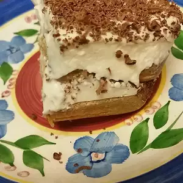

Tiramisu

Description
Light, traditional-tasting tiramisu. Cognac can be substituted for amaretto liqueur. Dark coffee can be substituted for espresso.
Ingredients
- 1 pound mascarpone cheese
- 1 cup white sugar
- 2 tablespoons amaretto liqueur, or more to taste
- 1 cup heavy whipping cream
- 1 cup cold espresso
- 24 ladyfingers, lightly toasted
- 2 (1 ounce) squares unsweetened chocolate, divided
Steps
- Whisk mascarpone cheese, sugar, and amaretto liqueur together in a bowl until smooth.
- Beat cream in a glass or metal bowl until soft peaks form. Lift your beater or whisk straight up: whipped cream will form soft mounds rather than a sharp peak. Fold whipped cream into mascarpone mixture.
- Pour espresso into a bowl. Dip ladyfingers into espresso and arrange 12 dipped ladyfingers in an 8-inch square pan. Spread 1/2 the mascarpone mixture over ladyfingers. Grate 1 chocolate square over mascarpone layer. Repeat a second layer with remaining dipped ladyfingers, mascarpone mixture, and chocolate, respectively. Refrigerate tiramisu until set, at least 2 hours.